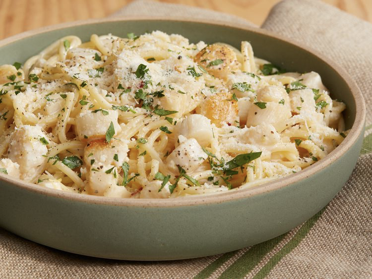

This scallop pasta dinner with a creamy sauce is fast and easy.
I cook the scallops a bit longer than many chefs, but that gives the dish more flavor and they're still tender and moist.
I think you'll agree, the sherry sauce benefits significantly from the longer cook time.
- 8 ounces uncooked thick spaghetti
- 1 tablespoon vegetable oil
- 1 pound bay scallops
- 2 tablespoons butter
- 3 cloves garlic, minced
- 2 teaspoons grated lemon zest
- 1 pinch red pepper flakes
- ⅓ cup dry sherry
- 1 cup heavy cream
- salt and pepper to taste
- 1 lemon, juiced
- 2 tablespoons chopped Italian parsley, divided
- Freshly grated Parmigiano-Reggiano cheese, for serving
- Bring a large pot of lightly salted water to a boil.
Cook spaghetti in the boiling water, stirring occasionally until tender yet firm to the bite,
about 10 minutes or 1 minute less than directed on the package.
- Meanwhile, heat oil in a large skillet over high heat.
When oil just starts to smoke, add scallops and move them into a single layer.
Let sear on high for about 1 minute. Toss to turn.
- Add butter and stir scallops until butter melts. Stir in garlic.
- Add lemon zest and red pepper flakes. Stir in sherry and cook and stir until alcohol cooks off, about 1 minute.
- Pour in cream. When mixture begins to simmer, reduce heat to medium-low. Add salt, pepper, and lemon juice.
- Drain pasta. Transfer to skillet with scallops; bring to a simmer.
Add 1/2 of the chopped parsley. Cook until pasta is heated through and tender, about 1 minute.
- Remove from heat. Garnish generously with grated cheese. Add the rest of the parsley. Serve in warm bowls.